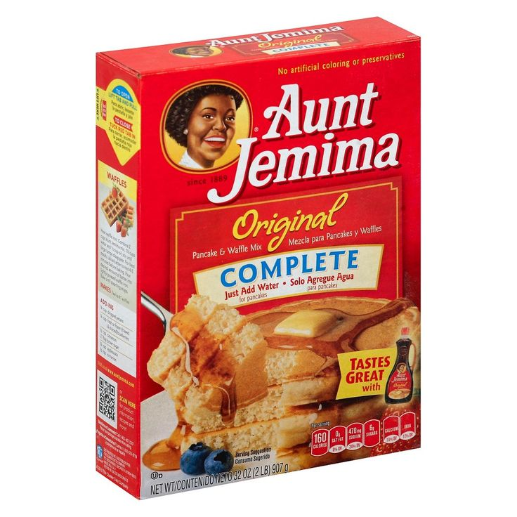

My Favorite Recipes
Welcome to my recipe web page! here I'll show you guys how I make my infamous waffles and favorite brownies.
1. My Secret Homemade Waffles
These are delicious homemade waffles made with mix, but I add sweet brown sugar and cinnamon to make the flavor pop (my secret ingredients). I always bake them until they are perfectly golden brown.

Ingredients
- Aunt Jemima pancake and waffle mix
- Milk
- Eggs
- Brown sugar
- Cinnamon
- Chocolate chips (optional)
Directions
- Stir your waffle mix, milk, and eggs together in a medium bowl until the batter is smooth.
- Mix in your secret ingredients by adding a spoonful of brown sugar and a dash of cinnamon.
- Throw in a handful of chocolate chips if you want extra sweetness (or manually drop after batter is poured).
- Pour the batter carefully into your hot waffle iron.
- Leave it to cook a little longer than usual so the outside gets crisp and crunchy instead of soft.
2. Classic Betty Crocker Brownies
This is a classic recipe for cake-like brownies that bake up perfectly in the oven. They are rich, chocolatey, and I like to leave them plain without adding anything extra on top because they,re great how they are.

Ingredients
- 1 box of Betty Crocker brownie mix
- Water
- Vegetable oil
- Eggs
Directions
- Preheat your oven to the temperature listed on the back of the box.
- Dump the brownie mix, water, oil, and eggs into a large bowl and stir it all up.
- Grease your baking pan so the batter does not stick to the bottom using spray or oil.
- Spread the chocolate mix evenly inside the pan using a spoon.
- Bake in the oven until a toothpick stuck in the center comes out clean, then let them cool before cutting.